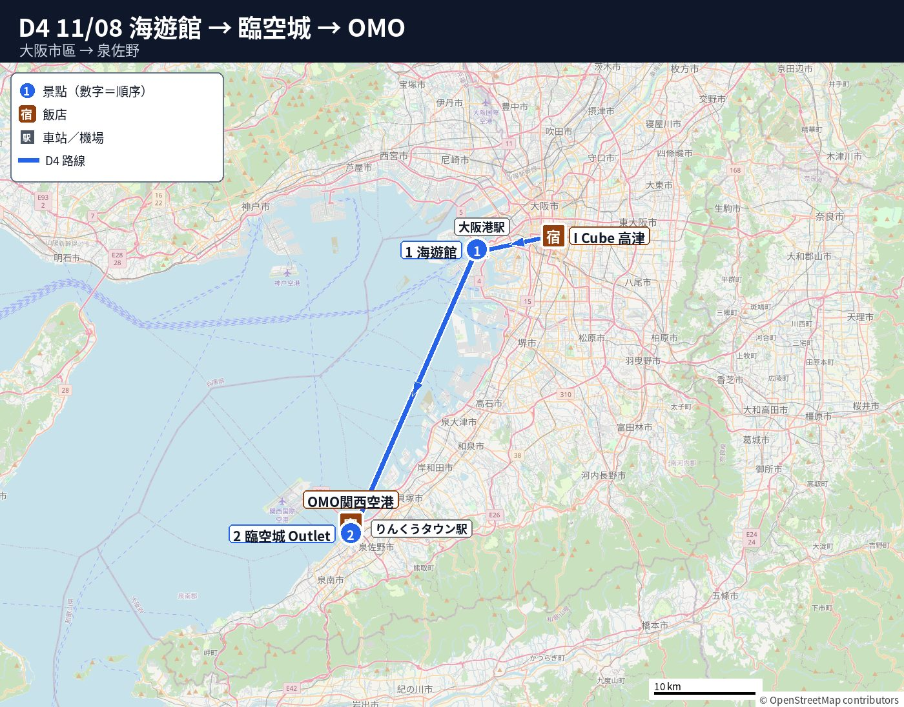
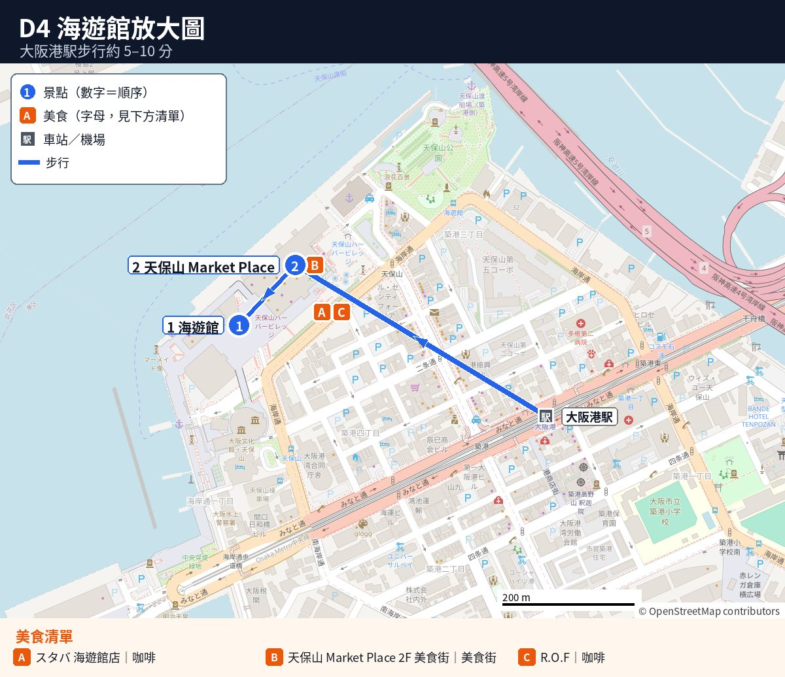
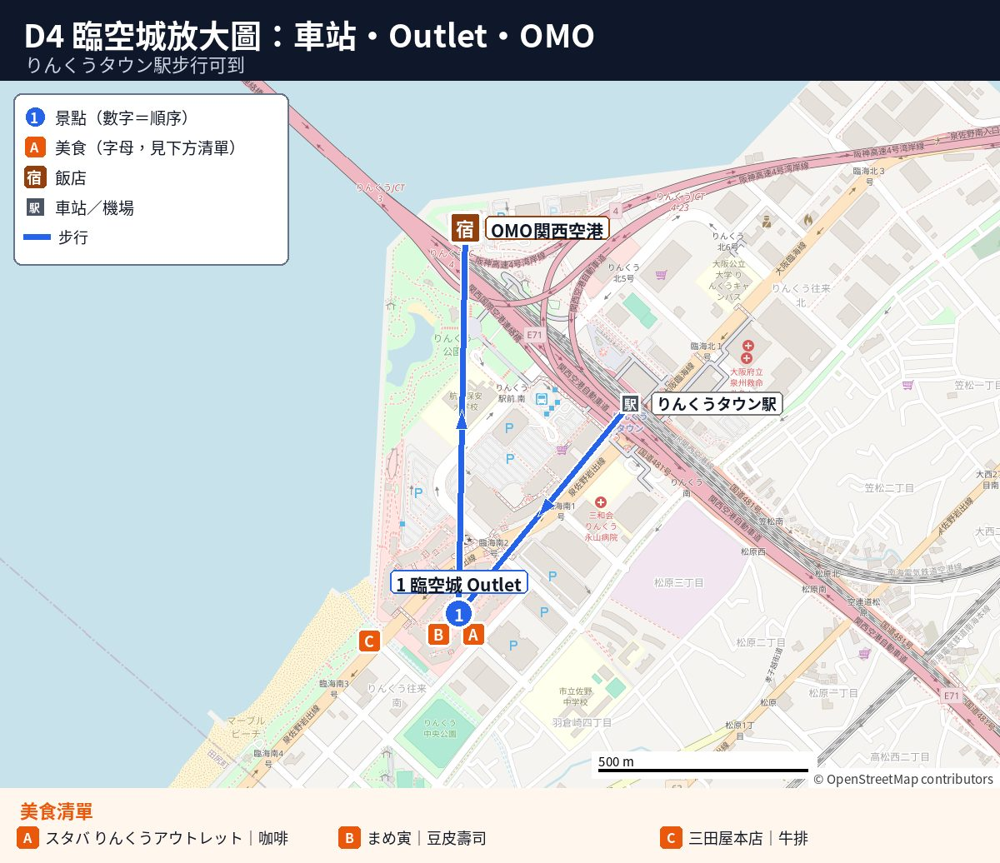

🐋 D4 11/08（日）｜海遊館 → 臨空城 Outlet → OMO 關西機場
Day 4 重點（09:30 退房出門 → 約 19:30 到 OMO 關西機場）
- 景點：海遊館 → 臨空城 Rinku Premium Outlets。
- 交通：地鐵到大阪港 → 地鐵＋JR 關空快速到臨空城 → 步行到飯店。帶行李到海遊館可叫 GO 大車（行李超過 4 個叫 2 台）。
- 周遊卡：不建議用（海遊館不含）。
- 交通費（5 人，估計）：每人約 ¥1,550–1,700，5 人約 ¥7,750–8,550；海遊館門票另計（看官網）。
🗺️ 今日路線圖
圖例：藍圓＝景點（數字為順序）｜橘方＝美食｜連線只表示大概方向



地圖資料 © OpenStreetMap contributors
📍 本日景點（點卡片看詳細）
不建議用周遊卡（海遊館不含）
節奏評估：偏累（09:30 帶行李出門、約 19:30 到 OMO；坐車約 2 小時，其中一段要在弁天町換線；Outlet 站著逛約 4 小時）
- 站著、排隊：海遊館入館（週日人多）、置物櫃、Outlet 走動。
- 可休息點：海遊館長椅、天保山美食街（400 多席）、Outlet Starbucks、晚餐店。
- 可刪減：做法③大行李先寄走，D4 帶小包；Outlet 縮短，爸爸先走 10 分回 OMO 休息；晚餐選做法②回 OMO 吃。
- 可加碼：坐天保山大觀覽車（坐著看海，約 15 分）；不建議再加景點。
行程細節
- 🧳 海遊館行李規定與置物櫃（11/03 查官方 FAQ）：
- 退房帶行李移動。
- 2026/4/24 起禁帶行李箱或三邊合計逾 120 cm 包包進館。
- 置物櫃位置：入口旁、海遊館ホール、商店附近（後兩處免票可用）、天保山 Marketplace。
- 費用：L ¥800、LL ¥1,000、XL ¥1,500（XL 僅 2 個）。
- 週日易滿，早點到。
先去 OMO 放行李再去海遊館，順路嗎？→ 不順路
D4 從日本橋市區飯店出發，晚住 OMO 關西機場（りんくうタウン）。海遊館在市區西邊，OMO 在南邊約 40 km，方向相反。
- 做法①：帶去海遊館放置物櫃（原做法）
- 🚃 交通：飯店→海遊館約 30 分；海遊館→りんくうタウン約 75–85 分。
- 💴 置物櫃：每個 L ¥800／LL ¥1,000／XL ¥1,500（官方 FAQ 11/03 查），週日早點到。
- ⏰ 時間：Outlet 可逛約 4 小時（14:45–19:00）。
- 做法②：先去 OMO 放行李（不建議，時間為估計）
- 🚃 去程：09:30 飯店叫車約 10 分到南海難波→空港急行約 38 分（¥820）→約 10:30 到りんくうタウン站（5 號出口走 1 分到 OMO 2F 行李室）。
- 🚃 折返：坐約 75–85 分回大阪港，約 12:10 到海遊館；看完再坐 75–85 分回りんくう，約 15:45 到 Outlet。
- 👎 缺點：多坐約 2 小時車、每人多 約 ¥2,100（5 人 約 ¥10,500）、Outlet 少逛約 1 小時。
- 做法③（建議）：D3 早上用ヤマト宅急便寄大行李到 OMO（11/03 查證）
- 📍 寄件地點：市區飯店自助入住無常駐櫃台（可先訊問房東）；最穩在 D3 08:00 包車前拿去附近黑貓標誌超商（7-11、全家）寄。ヤマト黑門市場營業所（日本橋 1-14-10）9:00 才開來不及。部分超商不收 180 以上。Airporter 當天配送僅收有人櫃台飯店，市區飯店可能不適用。
- 📝 託運單：拿「宅急便・發払い（先付）」單，不能到付，當場付現並留收據（ご依頼主控）領行李用。
- 📝 填單內容：收件人寫「OMO関西空港 フロント気付 訂房代表人姓名（同訂房拼音）様」，備註「11/8 宿泊」，地址電話抄 OMO 官網「連絡先」，寄件人寫自己手機，品名「スーツケース（衣類）」，希望送達填 11/8 午前中。
- 💴 運費（ヤマト官方，現金／每個）：大阪府內價為 120 尺寸 ¥1,730、140 ¥2,090、160 ¥2,410（限 25 kg）、180 ¥3,030（限 30 kg）、200 ¥3,690（限 30 kg）。超商用手機做單「宅急便をスマホで送る」才有此價；手寫單為一般關西價（160 ¥3,020、180 ¥3,680、200 ¥4,470），自寄減 ¥100。24–28 吋約 160–200 尺寸，5 個估 約 ¥12,000–18,500。
- ⏰ 送達與收件：府內一般隔天到（依店員或ヤマト「お届け予定日時検索」為準）。星野 FAQ 寫可收件（禁到付、貴重品、易碎品），但要求到達前一天送到，出發前先寫信問 （email 不公開））能否收 11/8 當天到的行李。
- 🎒 隨身包：保留 D3 晚與 D4 白天換洗衣物、藥、充電器。
- 🧳 OMO 行李室：在 2F（427 個置物櫃，限住客），入住前能否用請先向 OMO 確認。來源：OMO 關西機場 官網｜大型バゲージルーム
### 🧳 要不要寄行李？（A 寄ヤマト／B 自己帶，11/03 查證）
| 項目 | A：ヤマト宅急便：市區飯店 → OMO関西空港 | B：5 個行李箱自己帶（GO 大車或電車） |
|---|---|---|
| 💴 費用 | 每個 120 尺寸 ¥1,730–200 尺寸 ¥3,690（官方「同一都道府県内運賃」，便利商店要用「宅急便をスマホで送る」才有這個價）。5 個約 ¥12,000–18,500（估計）。 | 飯店 → 海遊館 GO 大車 1 台＋一般車 1 台或 2 台車，約 ¥6,000–8,000（估計）；海遊館置物櫃 ¥800–1,500 × 5＝約 ¥4,000–5,400（官方 FAQ 11/03 查）；海遊館 → りんくう 帶行李坐電車每人約 ¥1,000（估計）；坐計程車約 45 km，2 台約 ¥30,000 以上（估計，未查證）。 |
| ⏰ 什麼時候寄、什麼時候到 | D3（11/7）早上寄 → 11/8 送到，可以指定「午前中」（08–12 時）（ヤマト官方「お届け予定日検索」542 → 598 郵遞區號，11/03 查）。11/8 當天寄不會當天到（查到的是 11/9）。便利商店當天發送的截止時間每家不同，官方寫要問店家；要在 D1／D2 經過時先問。網路叫人來收（web 集荷）當天 16:00 截止，但要有人在飯店等。 | 不用寄。D4 09:30 帶行李出門。 |
| 🏨 OMO 收不收、幾點入住 | OMO 官網：可以收寄來的行李，入住「前一天」起就可以放；不收到付、冷藏品；單上要寫入住日和訂房代表人姓名。官網這樣寫，11/8 早上送到應該可以；但星野 FAQ 寫「請在到達前一天送到」，兩邊寫法不同（未完全確認），可以在 D1–D3 打電話問 OMO 一句。入住 15:00、退房 11:00（OMO 官網）。 | 約 19:30 到 OMO 才放下行李（如果先去 OMO 2F 行李室，入住前能不能用要先問 OMO，未確認）。 |
| ⏱️ 花在行李上的時間 | D3 早上在便利商店做單、付錢，約 20–30 分（估計），要在 08:00 包車前做完，早上會比較趕。D4 不用管行李。 | D4 叫車、上下車搬 5 個箱子、找置物櫃、取行李，合計約 40–60 分（估計）；週日置物櫃可能先用完。 |
| 👍 好處 | 爸爸 D4 不用拖箱子、不用在弁天町拖行李換線；海遊館和 Outlet 都可以輕鬆走；可以坐地鐵，省車資；Outlet 買的東西也比較好拿。 | 東西都在身邊，不怕寄丟或晚到；不用 D3 早起去寄；比較省運費。 |
| 👎 壞處 | D3 晚上和 D4 白天沒有行李箱，要先把 2 天的換洗衣物、藥、充電器、護照放隨身包；天氣或交通可能讓行李晚到（官方寫可能延誤）；一部分便利商店不收 180 尺寸以上；單一件超過 30 kg 或 200 cm 不能寄。 | 爸爸要跟著搬行李、等車；要 2 台車；海遊館 → りんくう 帶 5 個箱子坐電車很累；換線的時候最容易累。 |
- ⚠️ 行李晚到應變：
- 用收據「伝票番号」上ヤマト官網查貨。
- 19:30 到 OMO 若未到請櫃台查；當晚用品在隨身包不影響。
- 若 11/9 早出發前未到，問ヤマト能否改送關西機場櫃台（未查證）。
- ✅ 建議：選 A（D3 早上寄ヤマト，指定 11/8 午前中送到 OMO）
- 👴 爸爸不能久站，D4 偏累，不帶行李最省力。
- ① D1／D2 先問超商：「180／200 サイズ 受けられますか？ 当日発送は何時までですか？」。
- ② 每箱量長＋寬＋高並秤重。
- ③ 隨身包放 2 天用品與護照。
- 若超商不收大尺寸或早起不及，改選 B 照做法①。
來源：ヤマト 宅急便（運費、尺寸）｜ヤマト お届け予定日検索｜ヤマト FAQ：何時までに出せば翌日に届くか｜OMO 關西機場 官網（宅配、入住時間）
### 🧳 海遊館周邊寄行李（5 個行李箱，11/03 查證）
只有計畫 B（行李自己帶）才需要看這段。表格從最適合 5 個行李箱的排到最不適合。我們沒有預約任何地方。
| 排名 | 地點 | 走到海遊館 | 行李箱格數／尺寸 | 價格 | 週日 11/8 時間 | 付款 | 能否預約＋連結 | 週末注意 |
|---|---|---|---|---|---|---|---|---|
| 1 ⭐ | ecbo Geisha Theater（築港4-4-23） | 大阪港駅1號出口約 3 分；到海遊館約 300 m，走路約 4–5 分 | 大件（行李箱）8 個＋小件 10 個 | 大件 ¥800／個／天（小件 ¥500） | 10:00–18:00（11/8 不是假日） | 只能網上刷信用卡預付，現場不收錢 | ✅ 可預約，當天也可以；前一天前免費取消，當天取消收全額｜預約頁 | 11/03 查：11/8 放 5 大件顯示「可預約」；ecbo 資料寫沒有電梯；18:00 前要拿回 |
| 2 | Radical Storage「Osakako Station」（餐廳，築港4-2-2） | 約 4 分 | 格數沒公開（未確認） | ¥750／個／天＋保障 ¥352／個 | 11:00–20:00 | 只能網上刷卡，不收現金 | ✅ 一定要先預約（不收現場客）；地址預約後才給｜預約頁 | 11:00 才開門；評分 4.4（5 則） |
| 3 | Radical Storage「Tempozan Ferris Wheel」（大觀覽車附近） | 約 4 分 | 格數沒公開（未確認） | ¥750／個／天＋保障 ¥352／個 | 10:00–18:00 | 只能網上刷卡 | ✅ 一定要先預約｜預約頁 | 評分 4.8（5 則） |
| 4 | 大阪港駅 置物櫃（西改札內 1 處＋改札外 4 處，2026/8 資料） | 站內；到海遊館約 500 m，走路約 7–10 分 | ¥800 大櫃約 41 個、¥600 約 38 個（2023 第三方調查，現況未確認） | ¥400／¥600／¥800（2023） | 首班車到末班車；過 01:00 加收一天 | 現金或交通 IC 卡（2026/8 資料；2023 調查時有幾處只收現金） | ❌ 不能預約，沒有空位查詢 | 這一帶大櫃最多；週日早點放 |
| 5 | 海遊館 置物櫃（入口大樓 2F 入場前、海遊館ホール、商店附近） | 0 分 | L ¥800（寬 355–461×深 575–645×高 567–1135 mm）、LL ¥1,000（高 686–1046 mm）、XL ¥1,500（寬 461×深 645×高 1162 mm，只有 2 個）；總格數官方沒寫（未確認） | 每格 ¥800–1,500 | 海遊館開館時間內（未確認） | 官方沒寫（可能只收現金，未確認） | ❌ 不能預約；官方說沒有即時空位資訊 | 週日最快滿；ホール和商店附近沒門票也能用 |
| 6 | 天保山マーケットプレース 置物櫃（手扶梯附近）＋大觀覽車下 | 約 1–3 分 | 官方說共 4 處；大小、格數沒公開（未確認） | 未確認 | 依商場營業時間（未確認） | 未確認 | ❌ 不能預約 | 當備胎 |
| 7 | ecbo セブン－イレブン大阪港晴３丁目（港晴3-1-14，朝潮橋站附近） | 約 1.5 km（走路約 20 分，估計） | 大件 6 個＋小件 2 個 | 大件 ¥800／個／天 | 24 小時 | 只能網上刷信用卡 | ✅ 可預約｜預約頁 | 太遠，Geisha 滿了才考慮 |
| 8 | 海遊館 3F 付費區內 置物櫃 | 館內 | 只有 ¥400 小櫃，行李箱放不下 | ¥400 | — | — | ❌ | 不適合 |
| 9 | ふぁ～ふぁ 投幣洗衣店（大阪港駅2號出口約 3 分） | 約 340 m | 小 ¥200×15、中 ¥300×3，行李箱放不下 | ¥200–300 | 06:00–24:00 | 只收現金 | ❌ | 不適合 |
| 10 | ecbo 桜島駅荷物預かり所（萬博官方） | 約 720 m，在河對岸 | — | 舊資料 ¥1,000／個 | — | — | 可能已結束（萬博期間限定）；11/03 ecbo 搜尋查不到（未確認） | 不適合 |
| 11 | 飯店（ホテルシーガルてんぽーざん TEL 06-6575-5000、バンデホテル天保山東） | 約 3–10 分 | — | — | — | — | 一般只收住客的行李；シーガル官網沒寫非住客能不能寄（未確認） | 不建議 |
| 12 | Bounce／Nimotty／其他 | — | — | — | — | — | 11/03 查：Bounce 附近沒有據點；Nimotty 查不到附近據點；ecbo 其他點（ヤマト此花、ホテル京阪ユニバーサル・タワー）在 USJ 那邊，約 2 km 以上 | 不適合 |
- ✅ 建議：主計畫選 A（D3 寄ヤマト到 OMO），海遊館不帶行李。
- 若改選 B（預約需信用卡與帳號，先問我們）：
- ① 必訂 ecbo Geisha Theater 5 大件（¥800×5＝¥4,000，10:00 後放、18:00 前拿）。
- ② 不足額改必訂 Radical「Osakako Station」（11:00–20:00）。
- ③ 都沒訂到，出大阪港駅先放 ¥800 置物櫃（大櫃最多），勿等海遊館門口。
來源：海遊館 FAQ（置物櫃大小、價格）｜海遊館 館內設施｜海遊館 禁止帶入物品｜ecbo Geisha Theater｜Radical Storage 海遊館附近｜大阪港駅置物櫃 2026/8（エキナビネット）｜大阪港駅置物櫃格數（2023 調查）
🚃 09:30 日本橋 → 大阪港（海遊館）
- 路線：千日前線（粉紅）→ 阿波座 換 中央線（綠）→ 大阪港
- ⏱️ 時間（估計）：🚶 走路約 19 分（飯店→日本橋站 7 分＋阿波座換線 5 分＋大阪港→海遊館 7 分）＋ 🚃 搭車約 20 分｜原本合計 約30分
- 💴 車資：約¥290（估計）
- 班次／替代班：兩線約每5–8分一班（估計）
- 提醒：+15–20分緩衝（阿波座換線）。大阪港 1 號出口步行約10分。
- 即時查詢：Google Maps｜Jorudan｜Osaka Metro 運行情報
🔁 5 人怎麼走（三種比較，車資都是估計）
| 方案 | 時間 | 5 人合計 |
|---|---|---|
| 🚐 GO 大型ワゴン ×1 | 約20–25分 | 約 ¥4,500–6,000＋迎車費（估計）；最多約 4 個大行李 |
| 🚕 一般計程車 ×2（4+1） | 約20–25分 | 約 ¥6,000–8,000（估計） |
| 🚆 大眾運輸 | 約30分（阿波座換線） | 約 ¥290×5＝¥1,450（估計） |
- 💡 退房帶行李坐車最輕鬆；超過 4 個行李叫 2 台。
📍 10:30–13:00 海遊館
👉 詳細：📄 海遊館・天保山
- 📍 📍海遊館：停留約 2.5 小時（含午餐）。
- 💴 門票：浮動票價，11/8（日）大人 ¥2,800，週日人多必訂線上票。
- 👴 休息：館內沿路有長椅可坐看水槽（位置依現場）。
- ☕ 咖啡：スターバックス 海遊館店（同棟免門票）；館內 4F 咖啡廳 R.O.F 需門票。
- 🍽️ 午餐（約 12:30）：📍天保山マーケットプレース 2F フードコート（2F 美食街，週末 10:00–21:00）。
- 🍽️ 餐點：400 多席免訂位，有章魚燒、拉麵、丼飯（評分不高圖方便）。
- ⚠️ 注意：2F「なにわ食いしんぼ横丁」2026/9/29 起整修至 2027 年 3 月下旬（官方）。
🚃 13:15 大阪港 → 臨空城（りんくうタウン）
- 路線：中央線（綠）→ 弁天町 換 JR 關空快速（往關西空港）
- ⏱️ 時間（估計）：🚶 走路約 19 分（海遊館→車站 7 分＋弁天町換 JR 7 分＋車站→Outlet 5 分）＋ 🚃 搭車 55–65 分｜原本合計 約75–85分
- 💴 車資：約¥1,260–1,420（估計，依路線）
- 班次／替代班：JR 關空快速約每15–30分一班（估計）
- 提醒：+15–20分緩衝。弁天町從地鐵走到 JR（橘色環狀線月台）。搭「關空快速」前4節車廂（往關西空港），後面車廂往和歌山（以月台與車廂顯示為準）。
- 即時查詢：Google Maps｜Jorudan｜JR西日本 近畿運行情報
📍 14:45–19:00 臨空城 Rinku Premium Outlets
👉 必買清單、退稅步驟：📄 臨空城限定必買與退稅
- 📍 📍りんくうプレミアム・アウトレット：約 250 店，10:00–20:00，週日人多。
- 🧾 退稅：見子頁 📄 臨空城限定必買與退稅；留收據、勿拆用，D5 機場退稅。
- ☕ 休息：スターバックス りんくうプレミアム・アウトレット店（1F，9:30–20:00）。
🍽️ 晚餐（11/8 週日，Outlet 10:00–20:00）
- 📍まめ寅 りんくうプレミアム・アウトレット－天婦羅、烏龍麵，Google 4.0（約 370 則）、食べログ 3.37。11:00–21:00（LO 20:30）。72 席免訂位，晚餐會排隊。每人 約 ¥1,000–2,000。
- 📍三田屋本店 りんくうプレミアム・アウトレット店－牛排、漢堡排，Sea Side 1F。Google 4.5（約 850 則，評價兩極）。11:00–21:00（LO 20:30）。約 30 席免訂位。每人 約 ¥3,000–4,000。
- OMO ダイニング（飯店 21F）：限住客免訂位，18:00–20:00（10/5–12/3 LO 19:45），每人 約 ¥2,000 起。
兩個做法，當天再選：
- 做法①：在 Outlet 吃：19:00 前入座まめ寅或三田屋，約 20:00 走 10 分回 OMO（逛較久）。
- 做法②：回 OMO 吃：18:45 離開、約 18:55 到 OMO 放袋，19:45 LO 前點餐（看海灣夜景，爸爸輕鬆）。
🚃 19:15 Outlet → OMO 關西機場
- 路線：步行
- ⏱️ 時間（估計）：🚶 走路約 10 分 ＋ 🚃 搭車 0 分｜原本合計 約10分（估計）
- 💴 車資：¥0
- 班次／替代班：—
- 提醒：不用緩衝。
- 即時查詢：Google Maps
🔁 5 人怎麼走（三種比較，車資都是估計）
| 方案 | 時間 | 5 人合計 |
|---|---|---|
| 🚐 GO 大型ワゴン ×1 | — | ❌ 這區不能叫大車（泉佐野市） |
| 🚕 一般計程車 ×2（4+1） | 約3分 | 約 ¥1,400–2,000（估計） |
| 🚆 大眾運輸 | 步行約10分 | ¥0 |
- 💡 購物袋多才坐車。
📍 今日地點
🏨 住宿：OMO関西空港（D4；地址看訂房確認信）